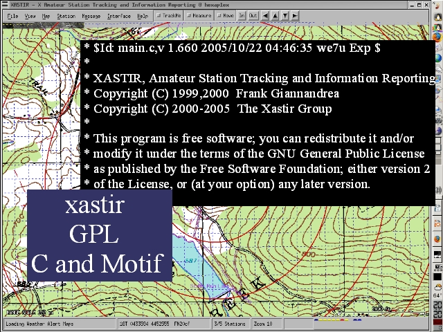

Notes:
GPSAR chose the open source APRS mapping software package XASTIR.
Xastir is available under the Gnu Public Licence and is written in C with motif wigets. Xastir requires XWidnows, and runs withing Cygwin, on *nix boxen, and on Mac OSX (with XWindows).
GPSAR has Xastir running on two Linux laptop, using xastir compiled from source with all the optional map libraries. (shapelib, pcre, libtiff, libgeotiff, libprojc, lcms, ImageMagick).
Some of the XASTIR screenshots used herein are of GPSAR trainings, most are simulations of operations in trainings. While GPSAR has deployed APRS during searches, non of the screenshots here are from actual searches.